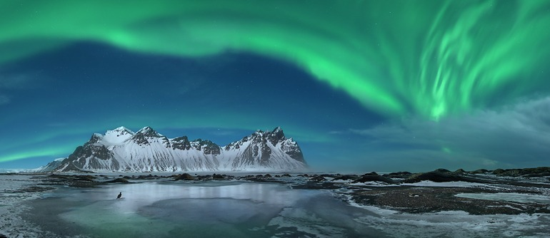
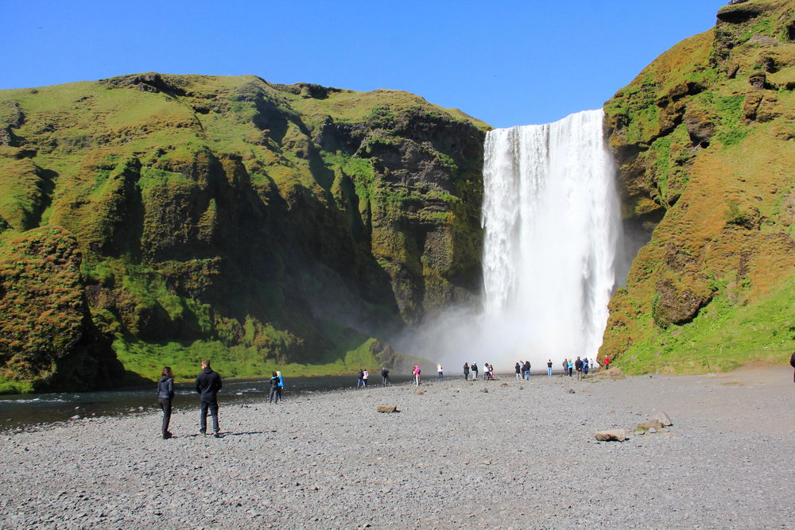
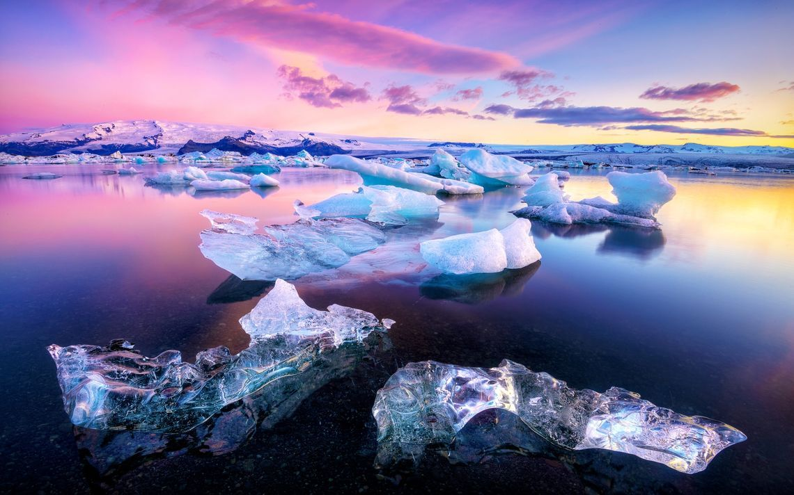
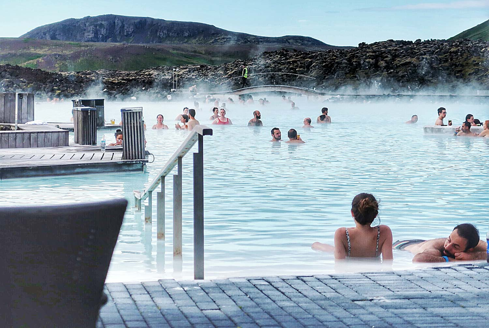

Магия Исландии




Исландия - это страна контрастов, где огонь встречается со льдом. Суровая красота этой земли завораживает с первого взгляда. Вулканические пейзажи, ледники, водопады и гейзеры создают ощущение, что ты попал на другую планету.
Северное сияние - это то, ради чего стоит приехать в Исландию осенью. Зеленые и фиолетовые волны танцуют в ночном небе, создавая невероятное световое шоу.
Водопад Скоугафосс поражает своей мощью. Миллионы литров воды обрушиваются с высоты 60 метров, создавая облако брызг и радугу в солнечные дни.
Ледниковая лагуна Йокульсарлон - это место, где айсберги медленно дрейфуют к океану. Голубой лед, черный песок и тюлени, выглядывающие из воды - картина, которую невозможно забыть.
Рекомендации для посещения
- Золотое кольцо - маршрут включает Тингвеллир, Гейсир и водопад Гюдльфосс, можно за день.
- Ледниковая лагуна Йокульсарлон - возьмите тур на лодке между айсбергами, незабываемо!
- Водопад Скоугафосс - поднимитесь по лестнице наверх для панорамного вида.
- Голубая лагуна - геотермальный спа, бронируйте заранее, лучше вечером.
- Рейкьявик - церковь Хатльгримскиркья, музеи и уютные кафе.
- Северное сияние - сентябрь-март, уезжайте подальше от города, проверяйте прогноз.
- Черный пляж Рейнисфьяра - базальтовые колонны и мощные волны, будьте осторожны!